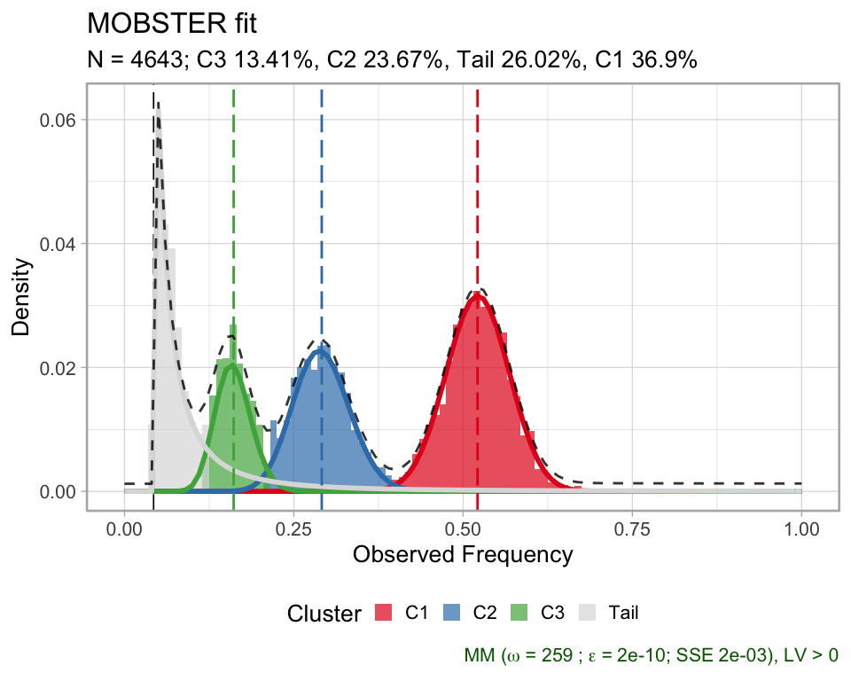
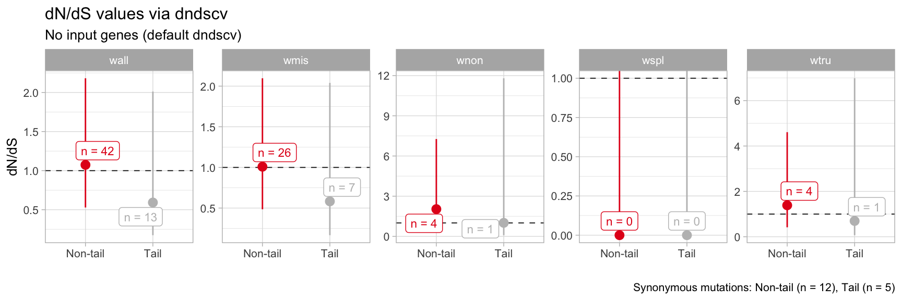
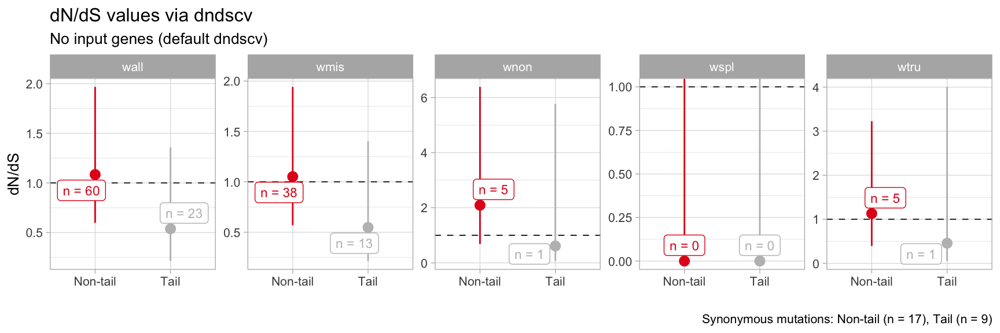

dnds.RmdThis vignette describes how to compute dN/dS values from the clusters of a MOBSTER model.
dN/dS values are provided by the dndscv R package, discussed in (Martincorena, et al. “Universal patterns of selection in cancer and somatic tissues”, Cell 171.5 (2017): 1029-1041; PMID 29056346).
To compute dN/dS values annotated mutations must have genomic coordinates: chromosome location chrom, position from, reference alleles alt and ref. We show this analysis with the fits for the PD4120a breast cancer sample dataset.
data('PD4120a_breast_sample', package = 'mobster')
# Print and plot the model
print(PD4120a_breast_sample$best)
#> ── [ MOBSTER ] n = 4643 with k = 3 Beta(s) and a tail ──────────────────────────────────────────────────────────────────
#> ● Clusters: π = 37% [C2], 26% [Tail], 24% [C1] and 13% [C3], with π > 0.
#> ● Tail [n = 1006, 26%] with alpha = 1.5.
#> ● Beta C1 [n = 1740, 37%] with mean = 0.52.
#> ● Beta C2 [n = 1167, 24%] with mean = 0.29.
#> ● Beta C3 [n = 730, 13%] with mean = 0.16.
#> ℹ Score(s): NLL = -3201.73; ICL = -5346.89 (-6113.83), H = 955.25 (188.31). Fit converged by MM in 259 steps.
plot(PD4120a_breast_sample$best)
We compute the values using the clustering assignments from the best fit.
clusters = Clusters(PD4120a_breast_sample$best)
pio::pioDisp(clusters)
#> # A tibble: 4,643 x 19
#> region gene chr from to ref alt vartype VAF.tumour VAF.normal
#> <chr> <chr> <chr> <int> <int> <chr> <chr> <chr> <dbl> <dbl>
#> 1 inter… LOC1… chr3 74574 74574 G A SNP 0.371 0
#> 2 inter… LOC1… chr3 80489 80489 C T SNP 0.276 0
#> 3 inter… LOC1… chr3 139091 139091 G C SNP 0.049 0
#> 4 inter… LOC1… chr3 150557 150557 G C SNP 0.077 0
#> 5 inter… LOC1… chr3 190860 190860 T A SNP 0.033 0
#> 6 inter… LOC1… chr3 198896 198896 C G SNP 0.347 0
#> 7 inter… LOC1… chr3 234298 234298 C T SNP 0.233 0
#> 8 intro… CHL1 chr3 271958 271958 C G SNP 0.282 0
#> 9 intro… CHL1 chr3 312028 312028 C T SNP 0.083 0
#> 10 intro… CHL1 chr3 321624 321624 C T SNP 0.162 0
#> # … with 4,633 more rows, and 9 more variables: depth.tumour <dbl>,
#> # depth.normal <chr>, NV <dbl>, VAF <dbl>, cluster <chr>, Tail <dbl>,
#> # C1 <dbl>, C2 <dbl>, C3 <dbl>The available clusters are C1, C2, C3 and Tail; C1 is the clonal cluster and C2 and C3 are subclones. The statistics can be computed for a custom grouping of the actual clusters. If mapping = c(C1= 'G1',C2= 'G1',C3= 'G1',Tail= 'G2'), then mutations from clusters C1, C2 and C3 are pooled into group G1. By default, with mapping = NULL, each cluster is a group.
We run the dnds analysis using the default gene list (gene_list = NULL) available in dndscv.
# Run with this grouping and default gene list
dnds_stats = dnds(
clusters,
mapping = c(`C1` = 'Non-tail', `C2` = 'Non-tail', `C3` = 'Non-tail', `Tail` = 'Tail'),
gene_list = NULL
)
#>
#> =-=-=-=-=-=-=-=-=-=-=-=-=-=-=-=-=-=-=-=-=-=-
#> MOBSTER wrapper for dndscv version 0.0.1.0
#> =-=-=-=-=-=-=-=-=-=-=-=-=-=-=-=-=-=-=-=-=-=-
#> Missing sample column.
#> > Assuming these are mutations from a single patient, adding dummy sample id.
#> > If this is not the case, label each mutation with a sample id.
#>
#> Mutations 4643
#> Genes 0
#> Clusters 4
#> Samples 0
#> Dnds groups 2
#>
#> [refdb = hg19]
#> > Removing chr from chromosome names for hg19 reference compatability
#> Mapping clusters to dnds_groups
#>
#> Non-tail Tail
#> 3637 1006
#>
#> =-=-=-=-=-=-=-=-
#> Running dndscv
#> =-=-=-=-=-=-=-=-
#>
#> dndscv @ dnds_group Non-tail
#>
#> [1] Loading the environment...
#> [2] Annotating the mutations...
#> [3] Estimating global rates...
#> [4] Running dNdSloc...
#> [5] Running dNdScv...
#> Regression model for substitutions (theta = 5.47).
#>
#> dndscv @ dnds_group Tail
#>
#> [1] Loading the environment...
#> [2] Annotating the mutations...
#> [3] Estimating global rates...
#> [4] Running dNdSloc...
#> [5] Running dNdScv...
#> Regression model for substitutions (theta = 0.000125).
#> Results: wall, wmis, wnon, wspl, wtru
#> # A tibble: 10 x 5
#> name mle cilow cihigh dnds_group
#> <chr> <dbl> <dbl> <dbl> <chr>
#> 1 wmis 1.01 0.485 2.10 Non-tail
#> 2 wnon 2.03 0.569 7.27 Non-tail
#> 3 wspl 0.0000000298 0 Inf Non-tail
#> 4 wtru 1.39 0.417 4.61 Non-tail
#> 5 wall 1.07 0.528 2.18 Non-tail
#> 6 wmis 0.583 0.166 2.04 Tail
#> 7 wnon 1.01 0.0860 11.8 Tail
#> 8 wspl 0.0000000227 0 Inf Tail
#> 9 wtru 0.696 0.0694 6.99 Tail
#> 10 wall 0.592 0.174 2.01 Tail
#> Generating ouptut plot
#> The tables returned returned by dndscv and a ggplot plot are returned. In the tables, column dnds_group labels the group.
# Summary statistics
print(dnds_stats$dnds_summary)
#> # A tibble: 10 x 5
#> name mle cilow cihigh dnds_group
#> <chr> <dbl> <dbl> <dbl> <chr>
#> 1 wmis 1.01 0.485 2.10 Non-tail
#> 2 wnon 2.03 0.569 7.27 Non-tail
#> 3 wspl 0.0000000298 0 Inf Non-tail
#> 4 wtru 1.39 0.417 4.61 Non-tail
#> 5 wall 1.07 0.528 2.18 Non-tail
#> 6 wmis 0.583 0.166 2.04 Tail
#> 7 wnon 1.01 0.0860 11.8 Tail
#> 8 wspl 0.0000000227 0 Inf Tail
#> 9 wtru 0.696 0.0694 6.99 Tail
#> 10 wall 0.592 0.174 2.01 Tail
# Table observation countns
print(dnds_stats$dndscv_table)
#> # A tibble: 40,182 x 15
#> gene_name n_syn n_mis n_non n_spl wmis_cv wnon_cv wspl_cv pmis_cv ptrunc_cv
#> <chr> <dbl> <dbl> <dbl> <dbl> <dbl> <dbl> <dbl> <dbl> <dbl>
#> 1 CNTN4 0 1 1 0 507. 3544. 3544. 1.36e-3 0.000170
#> 2 P4HTM 0 0 1 0 0 11135. 11135. 9.67e-1 0.0000506
#> 3 PRSS46 0 1 0 0 4274. 0 0 1.39e-4 0.992
#> 4 SPICE1 1 0 1 0 0 2859. 2859. 9.42e-1 0.000209
#> 5 C3orf56 0 1 0 0 2721. 0 0 2.25e-4 0.993
#> 6 CISH 0 1 0 0 2426. 0 0 2.54e-4 0.995
#> 7 TMEM45A 0 1 0 0 1871. 0 0 3.36e-4 0.991
#> 8 PLSCR1 0 1 0 0 1798. 0 0 3.50e-4 0.987
#> 9 LMCD1 0 1 0 0 1757. 0 0 3.59e-4 0.991
#> 10 DNAJC13 0 0 1 0 0 1711. 1711. 9.23e-1 0.000369
#> # … with 40,172 more rows, and 5 more variables: pallsubs_cv <dbl>,
#> # qmis_cv <dbl>, qtrunc_cv <dbl>, qallsubs_cv <dbl>, dnds_group <chr>
# Plot
print(dnds_stats$plot)
The default plot contains results obtained from all substitution models available in dndscv. Specific models can be required using the parameters of the dnds function.
A custom list of genes can be supplied in the call to dnds() as the variable genes_list.
MOBSTER provides 4 lists of interests for this type of computation:
Martincorena et al. Cell 171.5 (2017): 1029-1041.;Tarabichi, et al. Nature Genetics 50.12 (2018): 1630.;Wang et al. Science 350.6264 (2015): 1096-1101.;Bloomen et al. Science 350.6264 (2015): 1092-1096..which are available to load.
# Load the list
data('cancer_genes_dnds', package = 'mobster')
# Each sublist is a list
print(lapply(cancer_genes_dnds, head))
#> $Martincorena_drivers
#> [1] "CCDC6" "EIF1AX" "HIST1H2BD" "MED12" "POLE" "SMARCB1"
#>
#> $Tarabichi_drivers
#> [1] "ACVR1" "ACVR1B" "AKT1" "ALK" "AMER1" "APC"
#>
#> $Wang_essentials
#> [1] "ABL1" "RPL23A" "AARS2" "TRMT112" "FARSA" "ABCB7"
#>
#> $Bloomen_essentials
#> [1] "AARS" "AASDHPPT" "AATF" "ABCB7" "ABCE1" "ABCF1"A custom gene list can be used. Beware that with data of a single patient there are might be few, or no substitutions to compute dnds values
The input format of the dnds function allows to pool data from several fits at once. We pool data from the real datasets available in the package.
# Lung and breast samples
data('LU4_lung_sample', package = 'mobster')
data('LUFF76_lung_sample', package = 'mobster')
data('PD4120a_breast_sample', package = 'mobster')We pool the data selecting the required columns.
dnds_multi = dnds(
rbind(
Clusters(LU4_lung_sample$best) %>% select(chr, from, ref, alt, cluster) %>% mutate(sample = 'LU4'),
Clusters(LUFF76_lung_sample$best) %>% select(chr, from, ref, alt, cluster) %>% mutate(sample = 'LUFF76'),
Clusters(PD4120a_breast_sample$best) %>% select(chr, from, ref, alt, cluster) %>% mutate(sample = 'PD4120a')
),
mapping = c(`C1` = 'Non-tail', `C2` = 'Non-tail', `C3` = 'Non-tail', `Tail` = 'Tail'),
)
#>
#> =-=-=-=-=-=-=-=-=-=-=-=-=-=-=-=-=-=-=-=-=-=-
#> MOBSTER wrapper for dndscv version 0.0.1.0
#> =-=-=-=-=-=-=-=-=-=-=-=-=-=-=-=-=-=-=-=-=-=-
#>
#> Mutations 8223
#> Genes 0
#> Clusters 4
#> Samples 3
#> Dnds groups 2
#>
#> [refdb = hg19]
#> > Removing chr from chromosome names for hg19 reference compatability
#> Mapping clusters to dnds_groups
#>
#> Non-tail Tail
#> 5831 2392
#>
#> =-=-=-=-=-=-=-=-
#> Running dndscv
#> =-=-=-=-=-=-=-=-
#>
#> dndscv @ dnds_group Non-tail
#>
#> [1] Loading the environment...
#> [2] Annotating the mutations...
#> [3] Estimating global rates...
#> [4] Running dNdSloc...
#> [5] Running dNdScv...
#> Regression model for substitutions (theta = 10.6).
#>
#> dndscv @ dnds_group Tail
#>
#> [1] Loading the environment...
#> [2] Annotating the mutations...
#> [3] Estimating global rates...
#> [4] Running dNdSloc...
#> [5] Running dNdScv...
#> Regression model for substitutions (theta = 6.96).
#> Results: wall, wmis, wnon, wspl, wtru
#> # A tibble: 10 x 5
#> name mle cilow cihigh dnds_group
#> <chr> <dbl> <dbl> <dbl> <chr>
#> 1 wmis 1.05 0.569 1.94 Non-tail
#> 2 wnon 2.09 0.685 6.38 Non-tail
#> 3 wspl 0.0000000160 0 Inf Non-tail
#> 4 wtru 1.13 0.396 3.23 Non-tail
#> 5 wall 1.08 0.598 1.97 Non-tail
#> 6 wmis 0.547 0.213 1.40 Tail
#> 7 wnon 0.612 0.0649 5.77 Tail
#> 8 wspl 0.0000000430 0 Inf Tail
#> 9 wtru 0.457 0.0522 4.00 Tail
#> 10 wall 0.538 0.213 1.36 Tail
#> Generating ouptut plot
#>
print(dnds_multi$plot)